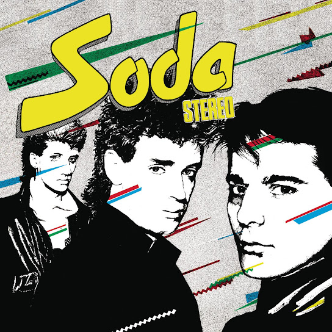
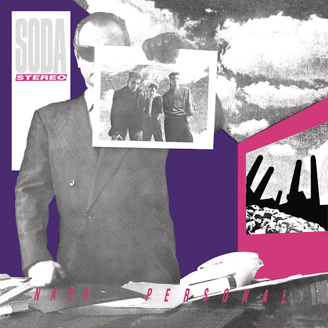
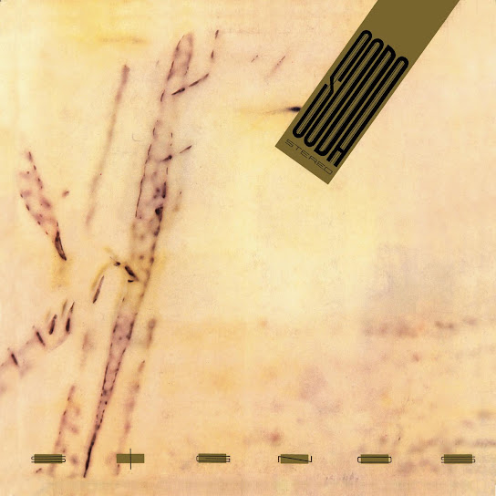
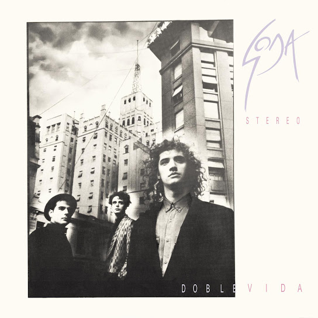
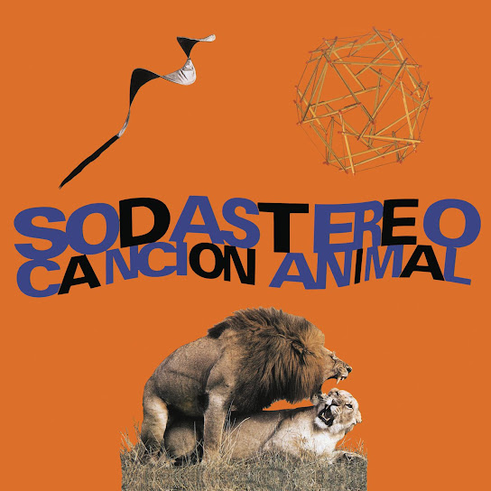
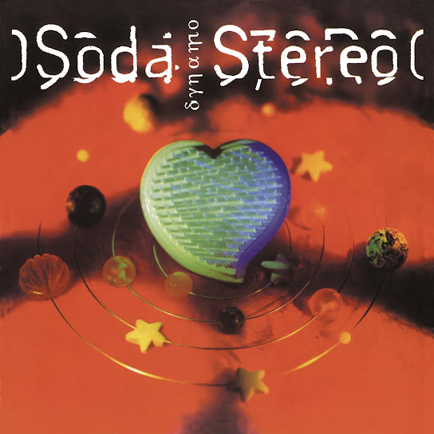
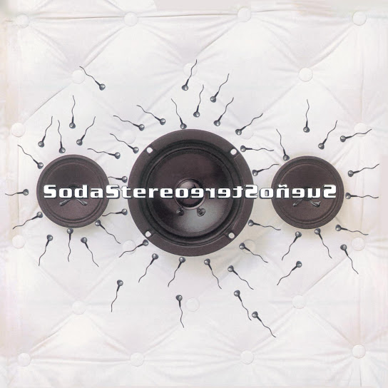

Soda Stereo
August 27, 1984
Soda’s first studio production was their self-titled album, produced by Federico Moura, leader of Virus.
With humorous and ironic lyrics, the uplifting style of the album is reminiscent of other rock bands during the 80’s.
British New Wave and Ska were essential for Soda, such as The Specials, Madness, Men at Work, XTC and The Police, which were also inspiration for their visual style.

Nada Personal
November 21, 1985
The second studio production by Soda Stereo was published by Sony Music Latin, which catapulted them into recognition across Latam.
Album themes are focused on social criticism and society’s ignorance. They address the topic with a sexual tone which, focused on a young audience, was very successful.
The World Festival of Video and TV had the album as a finalist that year.

Signos
November 10, 1986
Completely produced by the band’s members, Soda Stereo’s third studio album headlined their first international tour, redefining Rock en Español forever.
The natural and soft quality of the songs, alongside Cerati’s evolution as a guitarist and songwriter, made critics and public to call it their best album yet.
Many of the songs in the album, like Signos, Profugos, and Persiana Americana, became iconic for the band.

Doble Vida
September 15, 1988
While being the band’s fourth studio album, it was the second produced by a Soda collaborator, Carlos Alomar.
Alomar was an influential composer, musician, and producer in the United States. Cerati entrusted him to guide them through an innovative workflow, as Soda Stereo had become one of the most important Latin Rock bands.
The album became one of the first Latin albums to be recorded in the US.

Cancion Animal
August 7, 1990
Completely produced by the band’s members, Soda Stereo’s third studio album headlined their first international tour, redefining Rock en Español forever.
The natural and soft quality of the songs, alongside Cerati’s evolution as a guitarist and songwriter, made critics and public to call it their best album yet.
Many of the songs in the album, like Signos, Profugos, and Persiana Americana, became iconic for the band.

Dynamo
October 26, 1992
For their sixth studio album, the band returned to Argentina. It was by far their most divisive album, with some calling it their best and others their worst by far.
The poor reception of the record alongside other personal factors would lead to the band’s break of three years.
Inspiration from Madchester, Dream Pop, Shoegaze, and Electronic music makes every song in Dynamo stand out from other albums.

Sueño Stereo
June 21, 1995
After their break, the band returned to produce their seventh and last studio album. After only fifteen days, the record went double platinum.
While not as iconic as some of their earlier work, songs like “Ella usó mi cabeza como un revólver” and “Zoom” are some of their best known today.
The electronic sounds of their previous project is still present, but incorporated in a neo-psychedelic style.